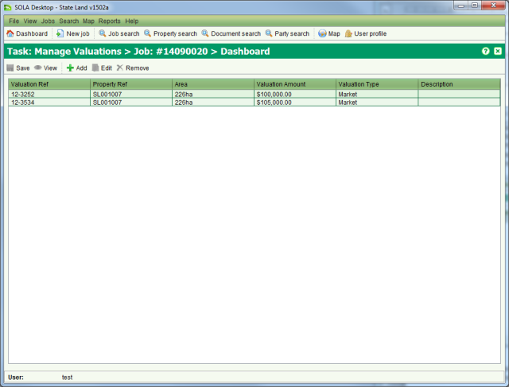
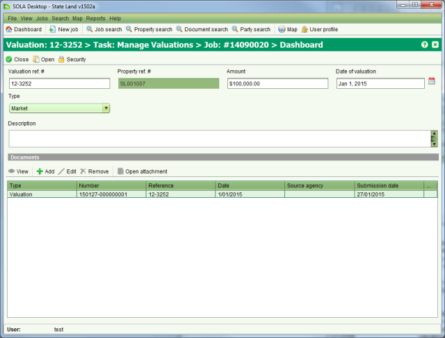

Often a job will incorporate a number of properties that require valuation and assessment by
the state. The Valuation List screen can be used to capture details for one or more
valuations that may be required for the properties affected by a job. To access the Valuation
List screen you must  Start a Manage Valuations task from the Tasks tab of the Job Details screen.
Start a Manage Valuations task from the Tasks tab of the Job Details screen.

Valuation List
To add a new property valuation click  Add on the Valuation List screen. This will open the Property Search screen
allowing you to select or find the property (state land or recorded property) the valuation
relates to. Once you
Add on the Valuation List screen. This will open the Property Search screen
allowing you to select or find the property (state land or recorded property) the valuation
relates to. Once you  Select the property in Property Search, the Valuation Details screen will
open automatically allowing you to enter the valuation information.
Select the property in Property Search, the Valuation Details screen will
open automatically allowing you to enter the valuation information.

Valuation Details
Enter the valuation reference number, amount, date of valuation and the type of valuation.
You must also add a scanned copy of the valuation report. If the valuation contains sensitive
information that must not be disclosed to other parties, you can use  Security to configure the appropriate viewing
privileges.
Security to configure the appropriate viewing
privileges.
When you have completed editing the valuation information,  Close the Valuation Details screen and
Close the Valuation Details screen and
 Save your changes from the Valuation
List screen.
Save your changes from the Valuation
List screen.